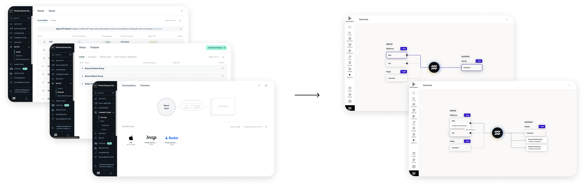

Integrations Connection Re-design
The Project
mParticle supports over 250 platform integrations, which are essential to its functionality.
Integration connections setup was one of the most outdated parts of the UI, often causing friction
for both new and existing customers.
In 2023, I've led an effort to overhaul the connections workflow redesign. My main goals were to
match users mental models in mParticle UI and create easy to use overviews. Upon the launch, we
saw a significant increase in the speed of onboarding for new customers, also surveys showed
increase in satisfaction ratings among existing customers.
